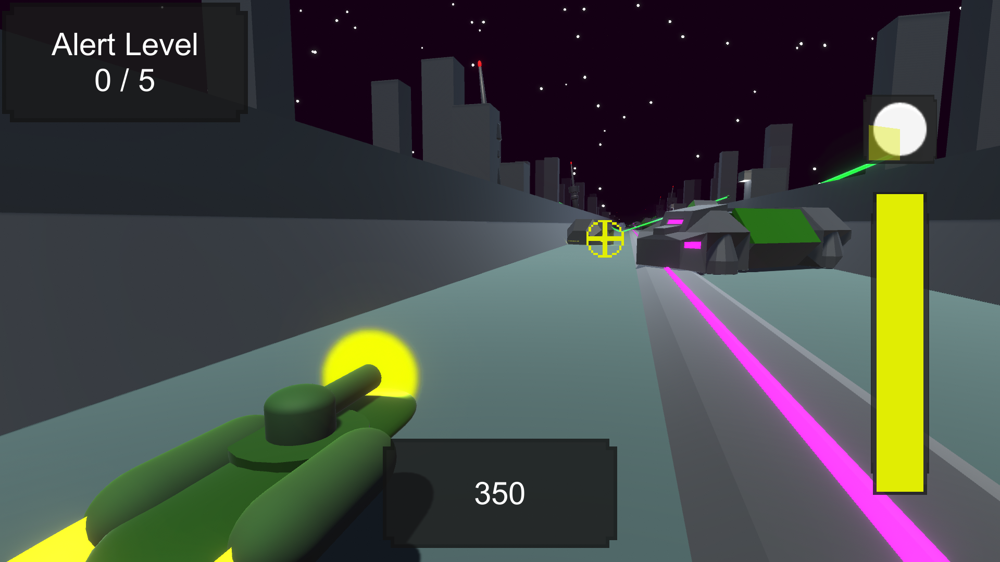
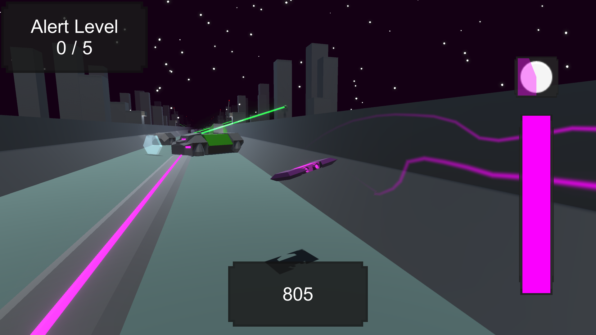
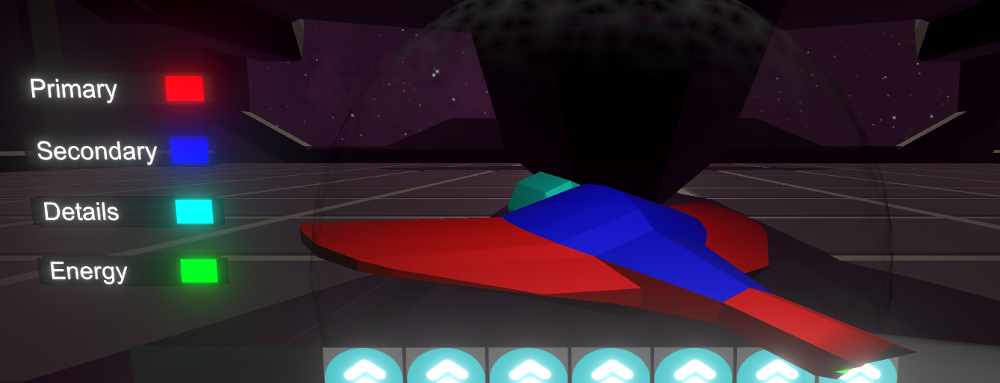
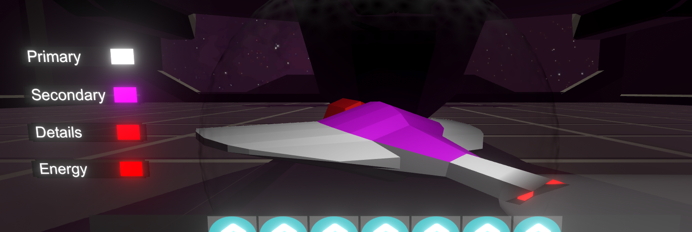

Frone was a learning project made during my studies at the Alfa-College.

Frone started out as a project for my study at Alfa-College, after the project was done I continued working on the game with the goal of learning more about features that would usually not be made in school projects due to time constraints.
The game has a post-apocalyptic setting, the premise of the game is that aliens have invaded earth. After the invasion different surviving factions started using these drones that are fast enough to outrun the aliens for a variety of tasks.

In the game, the player can collect and play as different hovercrafts, each hovercraft has an ability that can help it survive as well as colors that can be customised by the player.
Colors are seperated into 4 categories: primary, secondary, accents and energy. Each of these colors can be chosen by the player to create different combinations.


The colors are tracked in the drone settings class, each hovercraft has a settings class attached to it that stores the colors, animations and wether the hovercraft has been unlocked by the player.
This class also has the function that applies the stored colors to the hovercraft, so the color picker will change the color variable and then call this function:
public void SetColors(GameObject ParentObj)
{
Transform[] AllChildren = ParentObj.GetComponentsInChildren<Transform>(); //Gets all objects in the hovercraft object
foreach (Transform child in AllChildren)
{
if (child.GetComponent<Renderer>() != null)
{
Material RenderedMat = child.GetComponent<Renderer>().material;
switch (RenderedMat.name.Replace(" (Instance)", "")) //sets the right colors based on material name, other materials are ignored
{
case "DronePrimary":
RenderedMat.SetColor("_Color", PrimaryColor);
RenderedMat.SetColor("_EmissionColor", PrimaryColor);
break;
case "DroneSecondary":
RenderedMat.SetColor("_Color", SecondaryColor);
RenderedMat.SetColor("_EmissionColor", SecondaryColor);
break;
case "DroneDetails":
RenderedMat.SetColor("_Color", DetailsColor);
RenderedMat.SetColor("_EmissionColor", DetailsColor);
break;
case "DroneEnergy":
RenderedMat.SetColor("_Color", EnergyColor);
RenderedMat.SetColor("_EmissionColor", EnergyColor);
break;
}
if (child.GetComponent<TrailRenderer>() != null) //if object has a TrailRenderer, change those colors too
{
foreach (Material mat in child.GetComponent<TrailRenderer>().materials)
{
mat.SetColor("_Color", EnergyColor);
mat.SetColor("_EmissionColor", EnergyColor);
}
}
SetParticleColors(DroneParticles);
SetParticleColors(BoostParticles); //Also set colors for particle effects
if (!name.Contains("Frone_Dropship")) // also set these colors in the gamemanager so other scripts could easily access them, the script does not do this for dropship customisation, which uses the same system.
{
GameManager.Instance.CurrentPrimary = PrimaryColor;
GameManager.Instance.CurrentSecondary = SecondaryColor;
GameManager.Instance.CurrentDetails = DetailsColor;
GameManager.Instance.CurrentEnergy = EnergyColor;
}
}
}
}